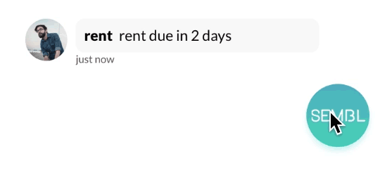
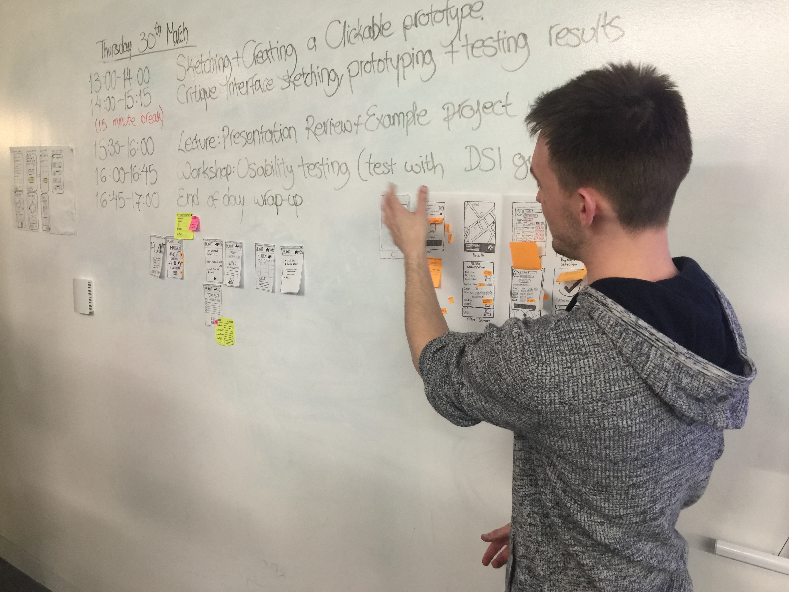
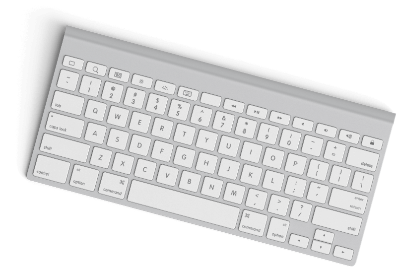

BEN SHELFORD
UX DESIGN
ABOUT ME
I have a passion to craft experiences, that people love to explore. I love energetic collaboration and prefer face-to-face conversation over phone calls. I have a desire for knowledge, I read books about history, design and animation (and am always looking for recommendations). I aim to design products that provide a fantastic user experience with interactions that make lives better by applying thoughtful design techniques, testing new ideas and exploring solutions.
WHAT I DO
-
MOTION
DELIGHT THROUGH MOTION
I have huge enthusiasm towards the use of motion and animation in design. I feel that inclusion of motion can add delight and playfulness to designs and move it from good UX to truly great UX. At the moment I am experimenting with Framer and Principle but am also looking to increase my skill and understanding with After Effects.
-
UX
USER FOCUSED DESIGN
As UX Designer with a background working in a variety of roles and markets, I have a broad skill set across user-centred design and a passion to craft experiences. I am a General Assembly alumn, studying UX design and learning all the best practice skills for making sure that the right problems are solved and how to design a product with the user always in mind.
-
CODE
FRONT END ENGINEERING
While I was at General Assembly I learned basic front end development. I have an understanding of HTML, CSS and javascript. Opportunities to code genuinely excite me and I'm always on the lookout to learn more.
PORTFOLIO


MY PROCESS
DISCOVERY
During the discovery phase, I thoroughly research the problem using techniques such as competitive analysis, user interviews and surveys.
DEFINE
In the define phase, I use techniques such as affinity mapping, user journeys and personas to set a clear design goal. I then use collaborative design often in the Google Sprint style combined with sketching to begin ideating solutions for the targeted problems.
DEVELOP
Throughout the develop phase skills like sketching, wireframing, prototyping and usability testing to build, test and validate my designs. I have created simple prototypes with Invision and Marvel as well as more complex in Framer, Flinto, Principle, Axure as well as paper and sticky notes.